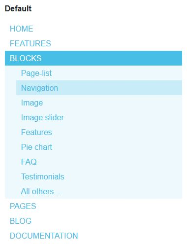
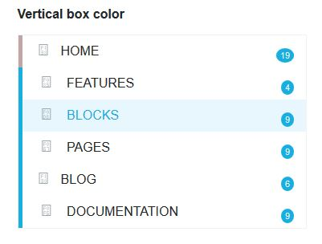
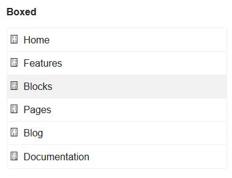
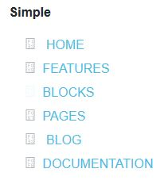

Blocks Navigation¶
Different templates for the autonav block
Autonav block has a number of customized templates. 4 are used for navigation and the header are automatically loaded by the theme. The others can be added anywhere on a page. It’s the ones that we will see it in detail.
Warning
Supermint, Supermint Dropdown are specialized for the top-nav. It can’t be used in a page content
Examples:
  